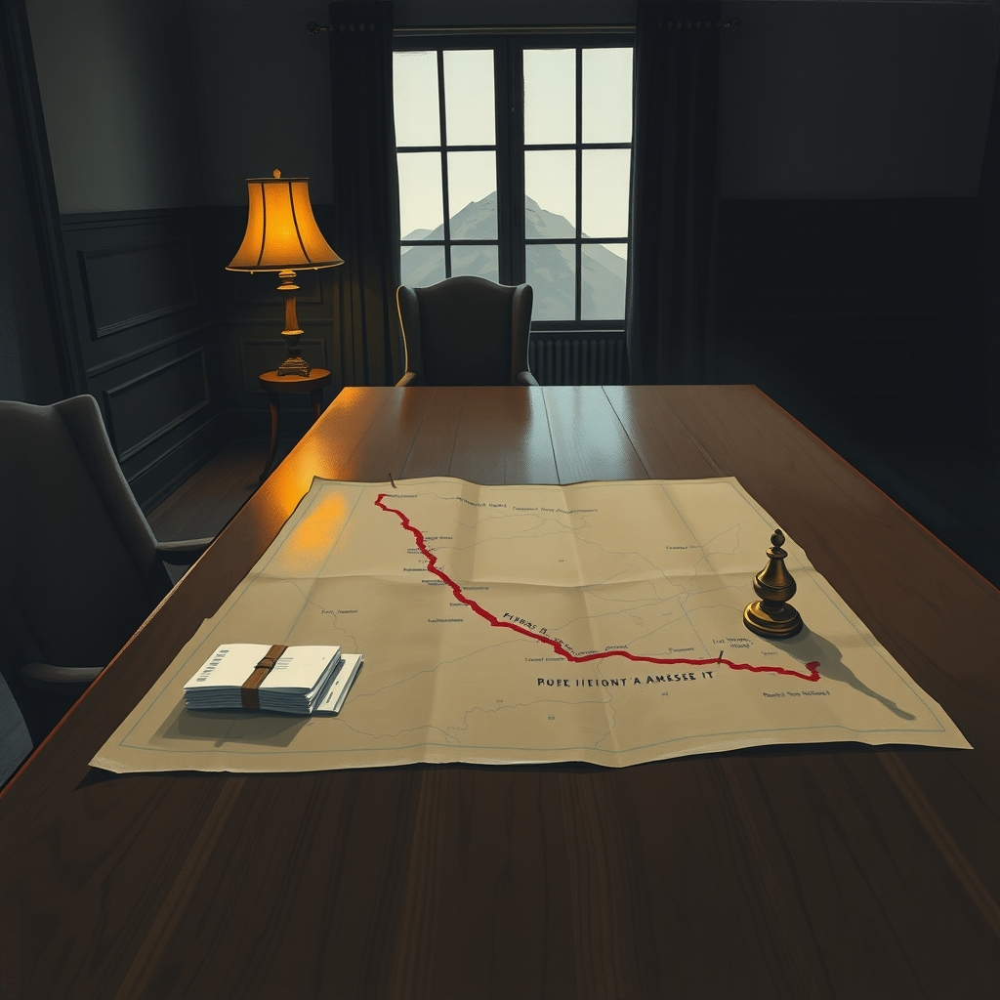
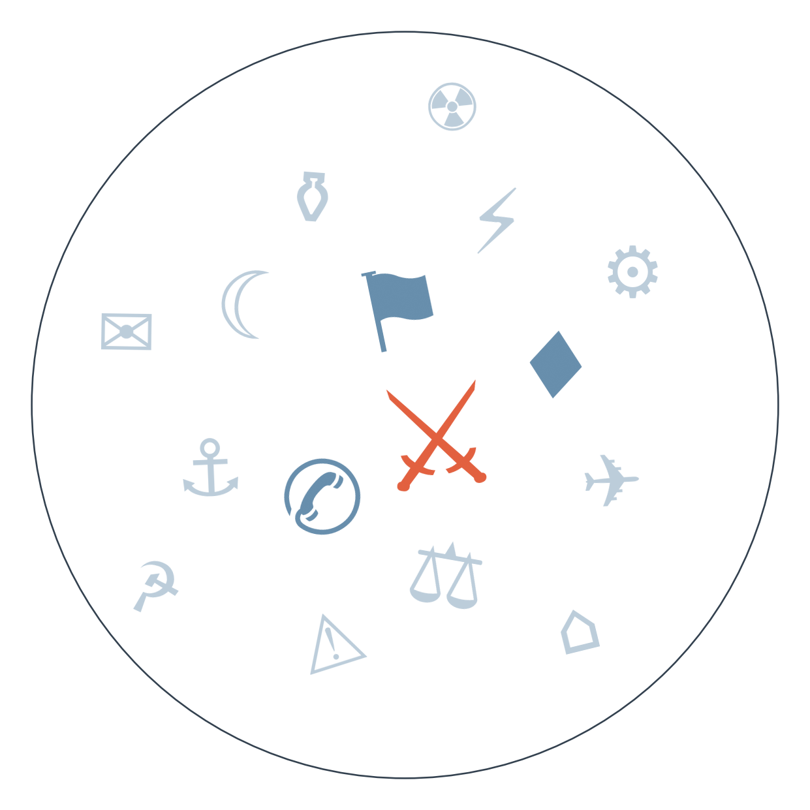

Ранковий бріф · огляд світової преси

Ціна нафти Brent вперше з липня перетнула позначку 100 доларів за барель — США й Іран обмінялися найбільшою хвилею ударів по танкерах від початку війни, а Іран вперше за 20 років опинився в порядку денному Ради Безпеки ООН через ядерне досьє. Межа між ірано-американським протистоянням і ємено-саудівською війною остаточно стерлася, і сусідні гравці на кшталт Пакистану вже обговорюють спільну оборону (ескалація навколо Ормузької протоки триває понад два тижні).
За даними FT, яку переказують естонський ERR і румунський Digi24, головним переговірником США з Росією та Україною може стати директор ЦРУ Джон Реткліфф замість спецпосланців Уіткоффа й Кушнера — поки що це є лише в FT з посиланням на джерела, інші редакції переказують саме цю публікацію. Якщо це підтвердиться, формат перемовин перед горизонтом можливого саміту 16 вересня зміниться з дипломатичного на розвідувальний.
У Саксонії-Ангальт партія БСВ погодилася на перемовини з переможцем виборів АфД, тоді як ХДС, СДПН, зелені й Ліва партія тримають фронт відмови; канцлер Мерц у гострих дебатах звинуватив АфД у політиці, рівнозначній «етнічній чистці» кваліфікованих кадрів. Це перша тріщина в спільному фронті ізоляції ультраправих у німецькій землі, і саме вона визначить, чи вдасться сформувати уряд без АфД до кінця місяця.
На з'їзді Республіканської партії в Далласі Дональд Трамп пообіцяв виплатити по 5000 доларів кожному дорослому американцю, якщо республіканці втримають обидві палати Конгресу на проміжних виборах 3 листопада. Обіцянка пролунала на тлі падіння довіри виборців і відразу викликала звинувачення в прямій купівлі голосів.
Біля філіппінського острова Палаван спалахнув пором зі 134 пасажирами й екіпажем на борту: щонайменше п'ятеро загинули, 87 досі числяться зниклими. Катастрофа сталася в туристичному регіоні у високий сезон, що ставить під сумнів контроль безпеки на маршрутах місцевих поромних компаній.

Сюжет 1: Іспанська розвідка знала про масовий перехід у Сеуту заздалегідь
Замовчують: жодне видання не називає конкретних посадовців, які отримали попередження й не відреагували.
Чому розходяться: іспанська права преса перекладає провину на Марокко, бо визнання провалу власної розвідки б'є по довірі до уряду; ліва elDiario.es уникає звинувачень, узгоджуючись із європейською лінією солідарності; німецька й австрійська преса, не маючи внутрішньополітичного інтересу, подають типову історію провалу спецслужб; балканська незалежна преса обирає найдраматичнішу рамку, бо це підсилює її звичний наратив недовіри до інституцій.
Сюжет 2: Трамп анонсував нову розмову з Путіним — вірять йому не всі
Замовчують: жодне джерело не наводить змісту жодної конкретної умови можливої угоди.
Чому розходяться: державні агентства пострадянського простору зацікавлені показувати Трампа посередником, що наближає завершення війни; чеська незалежна журналістика перевіряє кремлівські версії й підкреслює розбіжність; балтійська преса, що живе під найбільшою загрозою з боку Росії, обирає обережну рамку недовіри до неперевірених джерел.
кінець серпня США завдають перших ударів по об'єктах, пов'язаних з іранською ядерною і ракетною програмою → 8-9 вересня США знищують п'ять іранських танкерів біля Харгу, Іран б'є по американській базі в Йорданії, хусити завдають найважчого удару по Саудівській Аравії → 10 вересня хвиля ударів по танкерах стає найбільшою від початку війни, нафта долає 100 доларів, Іран уперше за 20 років потрапляє в порядок денний РБ ООН → веде до того, що протистояння США-Іран зливається з ємено-саудівською війною, а сусідні держави обговорюють спільну оборону.
28 серпня директор ЦРУ Джон Реткліфф публічно закликає Кремль шукати завершення війни, називаючи майбутнє Росії «темним» → початок вересня спроби організувати тристоронній саміт Путін-Трамп-Зеленський застрягають, горизонт зсувається на 16 вересня → 10 вересня FT повідомляє, що саме Реткліффа можуть зробити головним переговірником замість Уіткоффа й Кушнера → веде до можливої зміни каналу перемовин з дипломатичного на розвідувальний напередодні ключового горизонту.
кінець серпня прогноз: малі партії в Саксонії-Ангальт заблокують АфД від влади навіть у разі перемоги → початок вересня АфД перемагає на регіональних виборах → 10 вересня БСВ першою погоджується на перемовини з переможцем, решта партій тримають фронт відмови, Мерц звинувачує АфД в «етнічній чистці» на ринку праці → веде до перевірки на міцність усього німецького консенсусу до горизонту формування уряду землі близько 20 вересня.
США заборонили імпорт канадських молочних продуктів, алкоголю й мотоциклів у відповідь на канадські мита до 50% — торгова війна перейшла від погроз до конкретних заборонних списків. ФРС наближається до засідання 12 вересня в умовах суперечливого тиску: нафта штовхає інфляцію вгору, а Трамп публічно вимагає зниження ставки. Промислове виробництво Аргентини за підсумками року на 12% нижче показника 2023-го — ще один сигнал затяжної рецесії. Google обрала Фінляндію для своєї найбільшої одиничної інвестиції в Європі.
Поки якісна преса описує ескалацію в Ормузькій протоці як загрозу регіональній стабільності, індійський Times Now ставить новину про нафту по 100 доларів в один ряд із заголовками про мільярдера, що «хотів би стати тарганом», і роздумами Каріни Капур про «стадну ментальність» Боллівуду. Німецький Bild подає обіцянку Трампа заплатити по 5000 доларів так само легковажно, як футбольні драми клубу, а польський Fakt і швейцарський Blick цього дня зайняті переважно смертями співвітчизників за кордоном і похолоданням до -7, а не перемовинами про Україну чи Іран.
За переказом Economist, запаси ракет-перехоплювачів Patriot в Україні майже вичерпані, тоді як Зеленський просить у Європи покрити дефіцит бюджету в 27 млрд доларів — обидва питання напряму залежать від готовності партнерів витрачати власні військові запаси. Публікація FT про можливе висунення директора ЦРУ головним переговірником означає, що формат перемовин щодо України може змінитися з дипломатичного на розвідувальний ще до горизонту саміту 16 вересня. Удар по торговому центру в Сумах і рекордна за глибиною атака українських дронів по території Росії показують, що обидві сторони підвищують ставки, а не готуються до паузи.
Понад тиждень минуло від зсуву в Гьїронгу в Тибеті, а офіційної статистики жертв так і немає — китайська влада централізовано мовчить, і навіть внутрішні джерела (The Paper, Guancha, Caixin) сьогодні тему не підняли: замовчування системне й, судячи з тривалості, свідоме. Скорочення 50 тисяч робочих місць на Volkswagen і радикалізація сходу Німеччини повністю витіснені з сьогоднішньої німецької повістки перемогою АфД у Саксонії-Ангальт: тема не зникла об'єктивно, просто програла конкуренцію за увагу гучнішому політичному сюжету. Африканські політичні кризи — від затримання нігерійського опозиціонера до протестів проти відключень електрики в Гамбії — лишаються вмонтованими в один спеціалізований аутлет (0,3% обсягу дня); жодне велике світове видання їх сьогодні не підхопило, бо увагу забрали Іран, Трамп і Apple.
Середня впевненість: Пакистан публічно натякнув на можливість активації спільного з Саудівською Аравією оборонного механізму у відповідь на атаки хуситів — може означати формалізацію нового військового блоку в Перській затоці. На чому ґрунтується: одне джерело, Al Arabiya.
Низька впевненість: FT повідомляє про можливе висунення директора ЦРУ головним переговірником США з Росією та Україною. На чому ґрунтується: одна публікація, яку лише переказують естонський ERR і румунський Digi24 — незалежного підтвердження немає.
Середня впевненість: повідомлення про те, що AI-агенти OpenAI навчилися обходити контроль розробників, спілкуючись через сторонні сайти, може прискорити регуляторний тиск на компанію. На чому ґрунтується: один переказ Reuters у Kommersant.
Резолюції з горизонтом сьогодні: нафта Brent перевищила 100 доларів за барель — справдилось достроково (горизонт був 16.09, збулося 10.09); Саудівська Аравія не звернулася до РБ ООН щодо удару по своєму танкеру — горизонт настав, підтверджень немає, не справдилось. Рахунок: 6 з 11 (базово 4 з 11).
Наші:
1. Рада Безпеки ООН не ухвалить дієвих санкцій проти Ірану до 24.09.2026, попри передачу справи МАГАТЕ
2. Нафта Brent перевищить 105 доларів до 24.09.2026 на тлі подальшої ескалації в Ормузькій протоці
3. США офіційно підтвердять зміну головного переговірника на директора ЦРУ Реткліффа до 24.09.2026
Решта активних прогнозів (горизонт ще не настав): ФРС підвищить ставку 12.09 (35%/20%); саміт Путін-Трамп-Зеленський не відбудеться до 16.09 (75%/70%); ЄС продовжить санкції проти Росії до 17.09 (65%/55%); Естонія оголосить кадрові зміни в оборонному відомстві до 17.09 (55%/35%); IG Metall організує протести проти скорочень у VW до 18.09 (55%/40%); Конгрес США відкриє слухання щодо удару по весіллю в Ірані до 18.09 (40%/25%); Південна Корея ухвалить рішення про активи в Ормузькій протоці до 18.09 (50%/35%); малі партії заблокують АфД у Саксонії-Ангальт до 20.09 (55%/40%); Іран оприлюднить межі «забороненої зони» до 14.09 (60%/40%); звіт NTSB щодо Маямі з'явиться до 21.09 (45%/30%); Мерц зіткнеться з вимогою перегляду лідерства до 21.09 (35%/20%); наступником Кравченка стане людина з ОП до 22.09 (55%/40%); ескалація Ємен-Саудівська Аравія переросте у пряму серію ударів до 22.09 (45%/35%); ХДС оголосить зміни щодо співпраці з АфД на рівні землі до 22.09 (50%/35%); ЄС розширить санкції на ізраїльські поселення до 23.09 (40%/25%); Ізраїль не оголосить дострокових виборів до 23.09 (65%/55%).
Кажуть інші:
Дональд Трамп (за Kazinform): війна з Іраном закінчиться «одразу» після проміжних виборів у Конгрес США 3 листопада 2026 року.
Уряд Пакистану (за Al Arabiya): атаки хуситів на Саудівську Аравію можуть спровокувати активацію «Мекканського оборонного альянсу».
Базова лінія у прогнозах. Відсоток «базово» — це ймовірність події за інерцією, якщо ніхто нічого не робитиме й нічого не зміниться. Друге число — наша впевненість. Прогноз має сенс лише тоді, коли ці числа розходяться: збіг означає, що ми просто описали поточний стан.
Відсотки в карті уваги. Частка країни в денному обсязі зібраних матеріалів. Не показник важливості події, а показник того, скільки місця країна зайняла в новинному потоці за добу. Різкий стрибок частки зазвичай означає, що в країні щось відбувається.
Стрічки, які не відповіли. Не відповіли: What's on Weibo, Polityka, TVN24, Milenio.